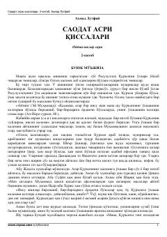

SAPayg'ambar (s.a.v.) hayotidan ilhomli diniy qissalar — imon va haqiqat yo'lida.
Bu kitob Muhammad payg'ambar (s.a.v.) hayoti va islom tarixining ilk davrlariga bag'ishlangan diniy-tarixiy qissalar to'plamidir. Asarda Qur'onning mo''jizaviy tabiati, oyning ikki bo'linishi kabi buyuk mo''jizalar va mushriklar bilan bo'lgan munozaralar tasvirlanadi. Kitob imon va kufr o'rtasidagi kurashni jonli va ta'sirchan tarzda hikoya qiladi.